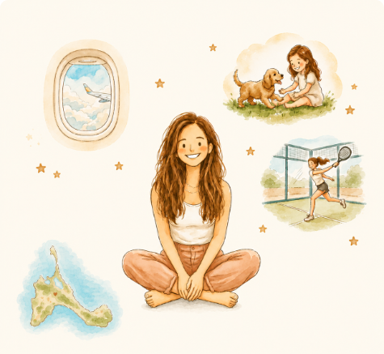

Quiénes somos
Hola, soy Cris.
Hace un tiempo me di cuenta de algo. Mis amigas, mujeres increíbles, se habían convertido sobre todo en mamá. Y a veces ni ellas se acordaban de la chica que viajaba sola, que soñaba a lo grande o que se reía hasta llorar.
Y no les pasa solo a ellas. Les pasa a los papás, a los abuelos, a los tíos… a todos los que un día pasaron a ser, sobre todo, una etiqueta.
Por eso nació Tale Us Stories: para que los niños descubran quién era esa persona antes de serlo todo para ellos. Y para que, al leerlo, se reconozca otra vez.
Cris
❦